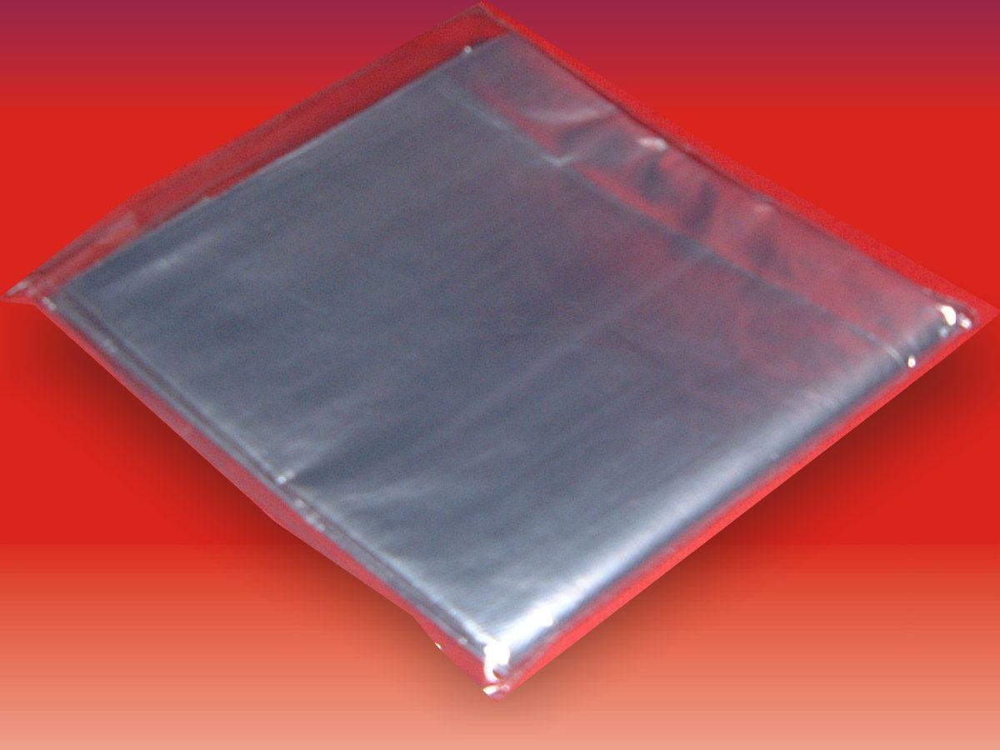
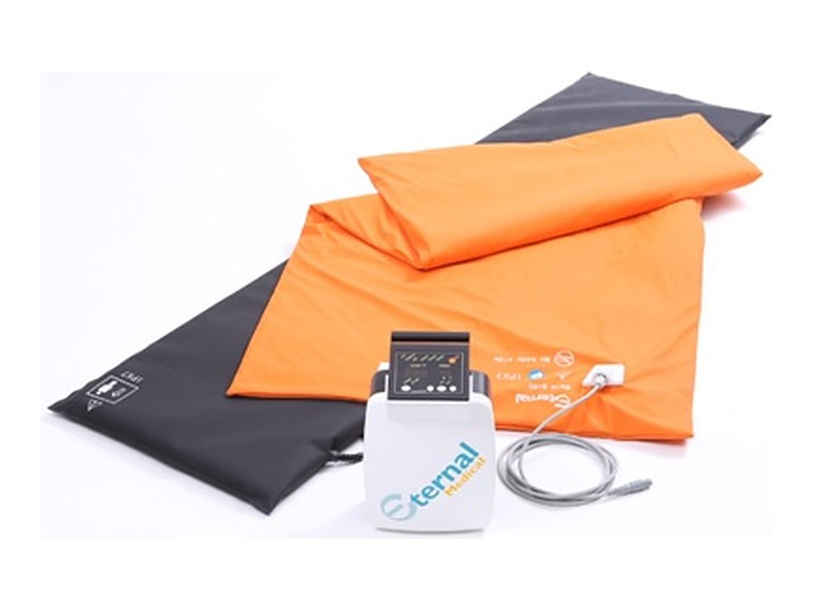
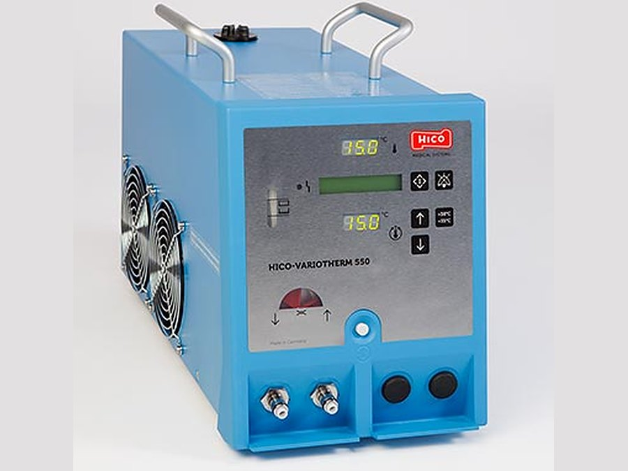
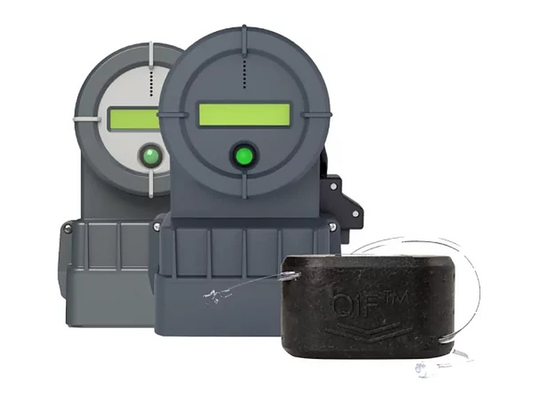
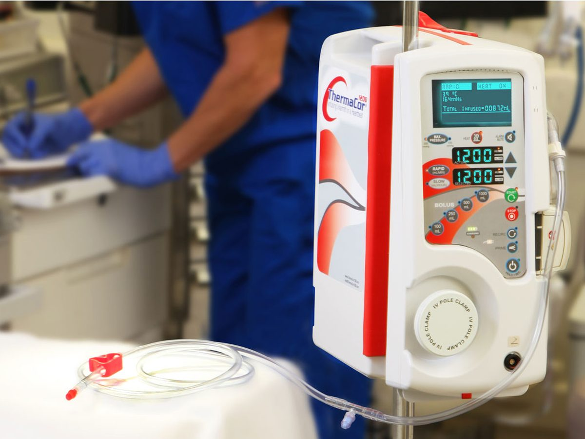

Contrôle et maintien de la température
Thermorégulation du patient, de la protection contre l’hypothermie jusqu’à l’hypothermie contrôlée.
- Bloc opératoire
- Salle de réveil
- Réanimation
- Soins intensifs
Une documentation technique complète est disponible pour chaque produit : elle vous est envoyée dès votre demande.

En première intention
Protection contre l’hypothermie.
-

Arcotherm
Couvertures isothermiques, charlottes et gants
Emballage individuel. Polyéthylène transparent laminé, recouvert de fibre naturelle de pulpe de cellulose.
- Antistatique
- Anticonducteur
- Anti-feu
- Radiotransparent
- Sans latex
- Sans aucun additif
Réchauffement et hypothermie contrôlée
-

Eternal
Générateur 24 V pour matelas et couvertures en fibre de carbone
Couvertures légères et matelas 5 couches en mousse à mémoire de forme, anti-escarres.
- 24 V
- Fibre de carbone
- Mémoire de forme
-

Hico
Générateurs à eau pour réchauffement et hypothermie contrôlée
Température maîtrisée par effet Peltier. Matelas et couvertures réutilisables ou à usage unique.
- Réchauffement 35 → 39 °C
- Hypothermie 5 → 40 °C
Réchauffement des transfusions
-

Warrior
Réchauffeur de transfusion
Fonctionne sur secteur ou sur batterie. 5 modèles.
- 200 ml/min
- 37 °C
-

ThermaCore
Réchauffeur de transfusion massive
Portable, évacuation des mousses, nombreuses sécurités. Set complet monté.
- 1 200 ml/min
- > 37 °C
Demandez-nous la documentation et/ou le dossier technique du produit qui vous intéresse. Notre réponse sera rapide.
Demander une documentationService après-vente
Un SAV disponible jour et nuit
Nous assurons la maintenance et la réparation du matériel que nous installons, et nous formons vos équipes à son utilisation.
Maintenance préventive annuelle, sur devis ou sous contrat. Le contrat prévoit notamment une période de garantie supplémentaire et le prêt d’un appareil de secours.
- Hotline06 30 82 27 22, 24 h / 24, 7 j / 7.
- Assistance téléphoniqueGratuite.
- QualificationRéalisée en interne ou par une entreprise externe.
- DocumentationMise à disposition des protocoles de maintenance et des dossiers techniques.
- FormationPrise en main du matériel par vos équipes lors de l’installation.